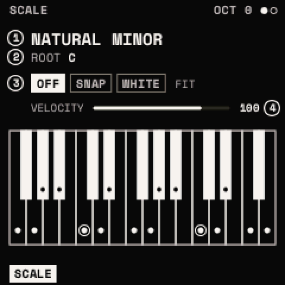
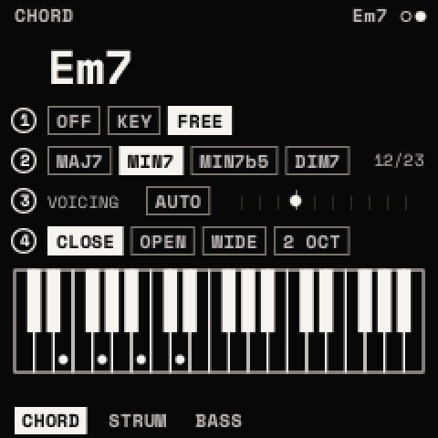
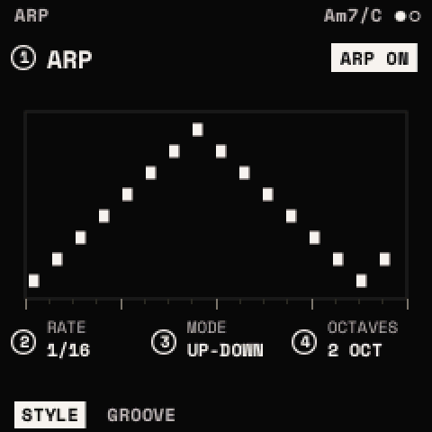
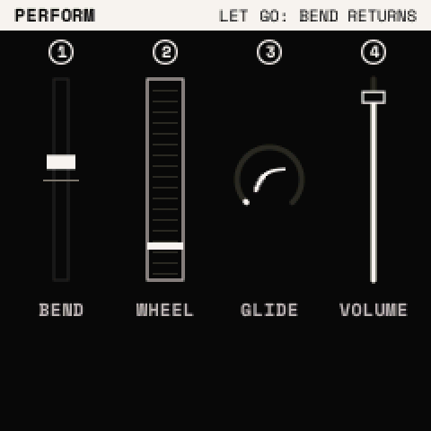

Playing
Scales, chords and the ARP change what the keys play; each looper track has its own. PERFORM, MACROS and MOMENTARY change how you play.
How to
Play in a scale: press SCL, turn KNOB 1 for the SCALE and KNOB 2 for the ROOT, then KNOB 3 for FIT. Or hold SCL and press a key to make it the root.
Play chords: hold SCL and press OCT+. Every key now plays a chord; SCL + OCT− turns chords off.
Arpeggiate: hold a chord, then hold ARP and press OCT+. ARP + OCT− stops it. Turn LATCH on (GROOVE page) to keep it playing after you let go.
Bend and glide: hold GLO for PERFORM (GLO twice keeps it open). Tap the tempo: hold GLO and tap PLAY three or more times.
SCALE

| Parameter | What it does |
|---|---|
| SCALE | CHROMATIC, MAJOR, NATURAL MINOR, DORIAN, MIXOLYDIAN, MAJOR and MINOR PENTATONIC, HARMONIC MINOR, PHRYGIAN, LYDIAN, LOCRIAN, MELODIC MINOR, BLUES, WHOLE TONE, DIMINISHED H-W and W-H |
| ROOT | C to B |
| FIT | OFF: every key plays its own note (scale notes glow). SNAP: a key outside the scale plays the scale note below. WHITE: the white keys play the scale from the root at C4; black keys are silent. |
| VELOCITY | The keys' velocity, 1–127 (100) |
MIDI notes are not fitted to the scale.
CHORD, STRUM, BASS

SCL, then SELECT to CHORD. The screen names the chord playing (for example "Cm7/G") and shows its notes.
| Page | Parameter | What it does |
|---|---|---|
| CHORD | MODE | OFF; KEY (each key plays its chord in the scale); FREE (each key plays TYPE on its own note) |
| SHAPE (KEY) | TRIAD, 7TH, 9TH, SUS2, SUS4, 6TH, ADD9, POWER | |
| TYPE (FREE) | MAJ, MIN, SUS2, SUS4, DIM, AUG, POWER, 6, MIN6, 7, MAJ7, MIN7, MIN7b5, DIM7, 7SUS4, ADD9, MIN ADD9, 9, MAJ9, MIN9, 6/9, MIN11, 13 | |
| VOICING | AUTO (each chord close to the last), or inversions −3 to +6 | |
| SPREAD | CLOSE, OPEN, WIDE, 2 OCT | |
| STRUM | STRUM | Gap between the notes: OFF or 2–200 ms |
| DIRECTION | UP, DOWN, ALTERNATE, RANDOM | |
| HUMAN | Random timing and level, 0–100 % | |
| TAPER | Later notes softer, 0–100 % | |
| BASS | BASS | The chord's root under it: OFF, ON |
| OCTAVE | 1 or 2 octaves below | |
| LEVEL | Its level, % of the chord's (80 %) |
One chord plays at a time: the last key pressed. MIDI notes play through the track's chords like the keys.
The ARP

ARP opens ARP (STYLE, GROOVE) and, with SELECT, STEPS (STEPS, RATCHET). It plays the chord, or the keys held when chords are off.
| Page | Parameter | What it does |
|---|---|---|
| STYLE | STYLE | ARP (notes in turn), PATTERN (the chord as rhythmic stabs), HARP (the keys become the chord's strings) |
| RATE | Step length: 5–120 ms, or 1/32 … 1 BAR (1/16) | |
| MODE (ARP) | UP, DOWN, UP-DOWN, DOWN-UP, UP & DOWN, AS PLAYED, RANDOM, WALK, OUTSIDE IN, INSIDE OUT, PINKY, THUMB, CHORD | |
| OCTAVES (ARP) | 1–4 | |
| PATTERN, ACCENT (PATTERN) | One of 16 rhythms; how much softer the off-beat stabs are | |
| GROOVE | GATE | Note length, 5–200 % of a step |
| SWING | 50 % (straight) to 75 % | |
| LENGTH | Steps played, 1–16 | |
| LATCH | Keep playing after the keys are released | |
| STEPS | STEP | Choose one of the 16 steps |
| KIND | PLAY, TIE (hold the last note), REST | |
| LEVEL, OCTAVE | 5–100 % of the velocity; −2 to +2 octaves | |
| RATCHET | RATCHET | 1–4 hits in the step |
| CHANCE | How often the step plays, 0–100 % | |
| SLIDE | Hold into the next note (a glide in MONO or LEGATO with GLIDE) |
With the transport running (PLAY), ARP and PATTERN follow its beat from the start of the bar; stopped, they start when you press a key. The ARP button is lit while the ARP is on.
Tip: a sequence from one finger: CHORD MODE KEY, ARP on with MODE UP and OCTAVES 2, LATCH on. Then add a few RESTs and an OCTAVE +1 on STEPS, and RATCHET 2 on the last step.
PERFORM, MACROS, MOMENTARY

| Layer | Hold | What the knobs do |
|---|---|---|
| PERFORM | GLO | KNOB 1 pitch bend (springs back when the layer closes), KNOB 2 mod wheel, KNOB 3 GLIDE, KNOB 4 VOLUME. PLAY taps the tempo. |
| MACROS | FX | MACRO 1–4. White keys F3–F4 bypass effects 1–8 (lit: in; dim: bypassed). |
| MOMENTARY | LFO | Change the page's values; they return when you let go. |
Tempo
GLO, then SELECT to GLOBAL. The tempo is kept with the settings, not the sound.
| Parameter | What it does | Range |
|---|---|---|
| BPM | Tempo, in beats of TS-NOTE | 20–300 (120) |
| TS-BEAT | Beats per bar | 1–16 (4) |
| TS-NOTE | The note that counts as a beat | 1, 2, 4, 8, 16 (4) |
| CLOCK IN | INTERNAL, or MIDI: follow incoming MIDI clock, start and stop |
With CLOCK IN MIDI, the screen shows "BPM: MIDI"; if the clock stops for a second, the panel's BPM returns.